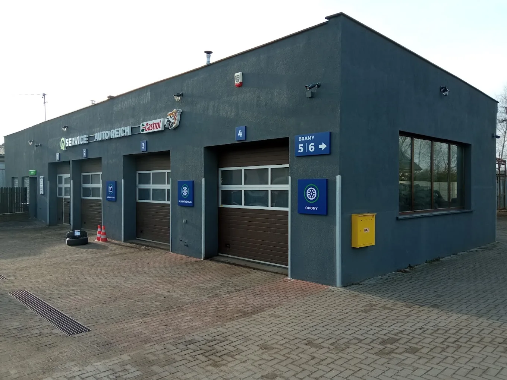
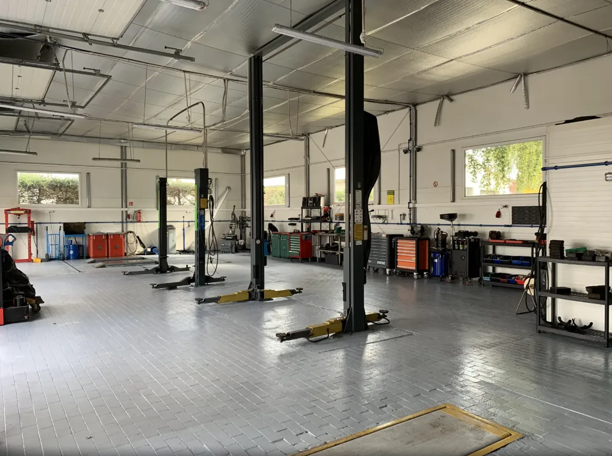
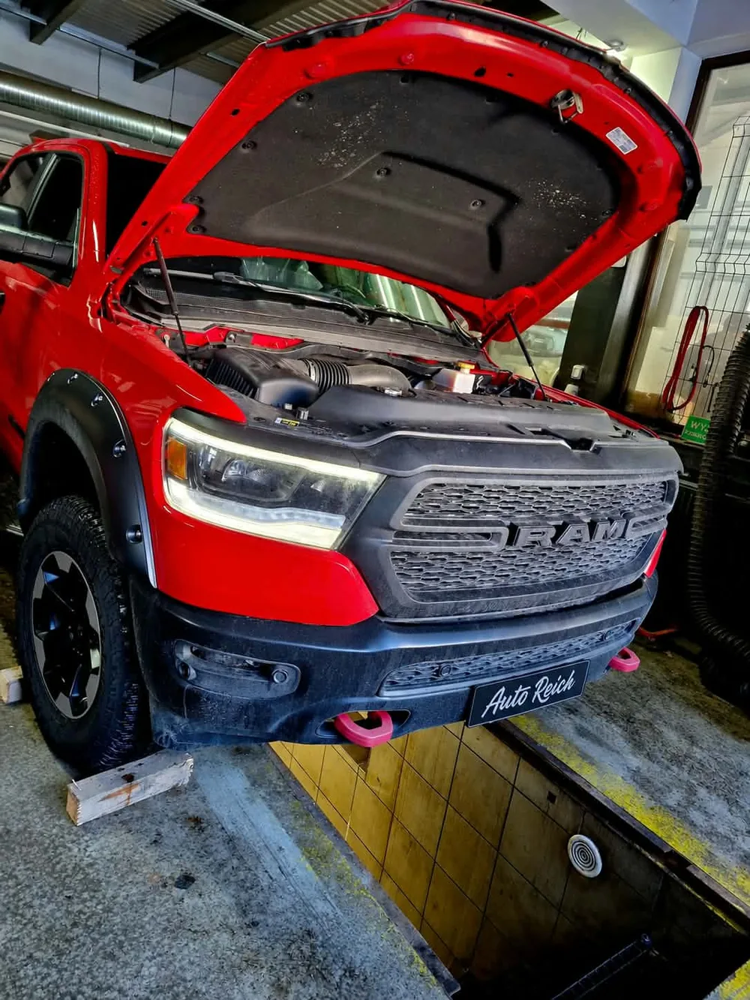
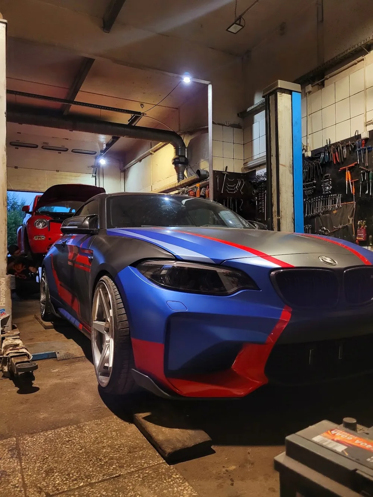
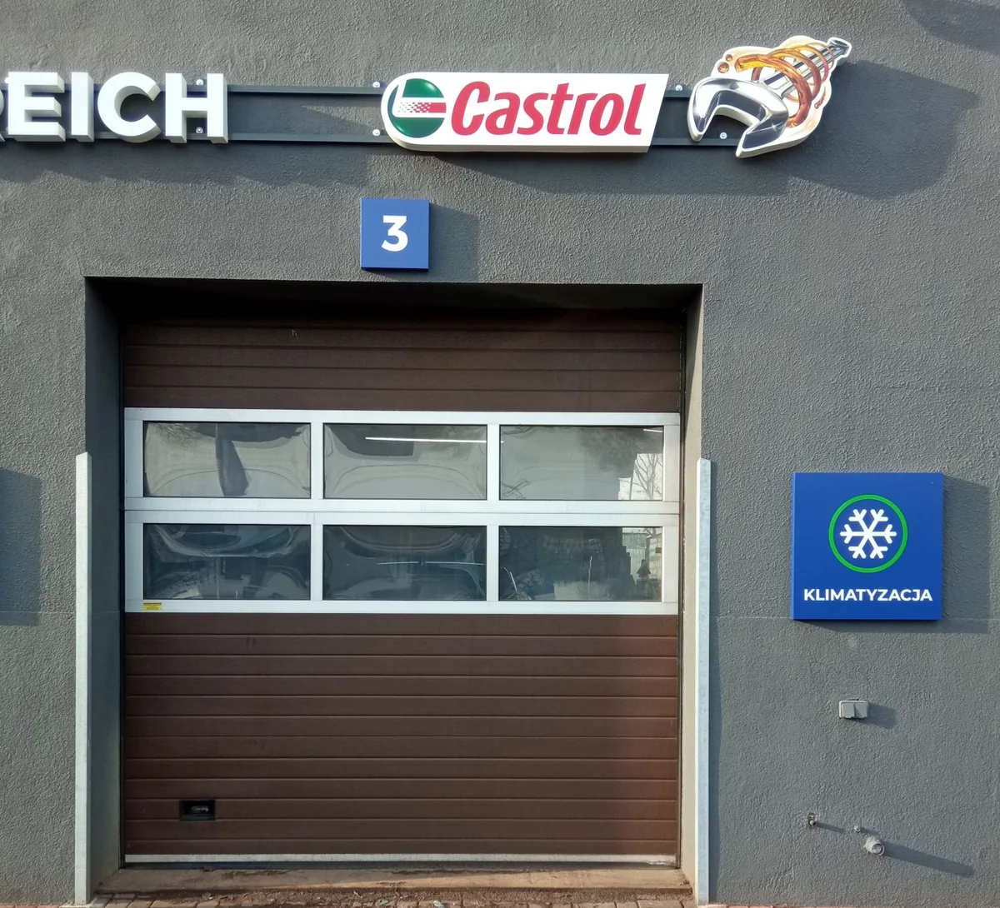
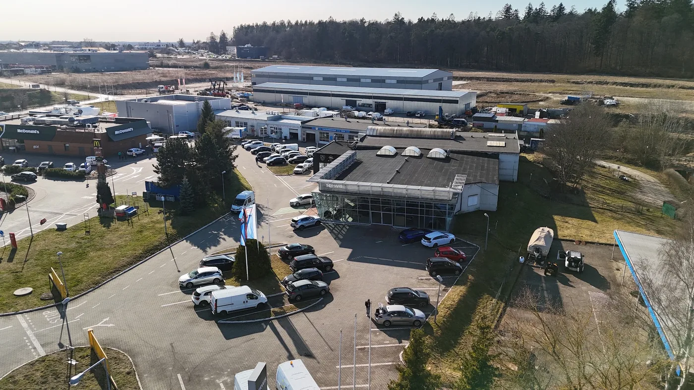
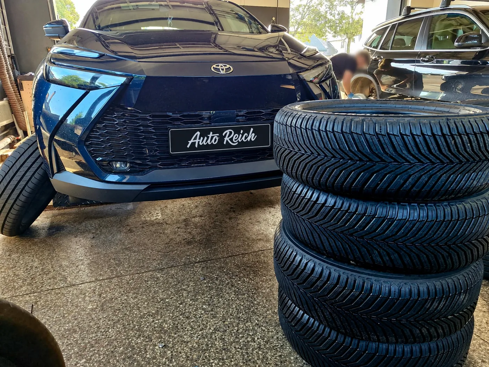
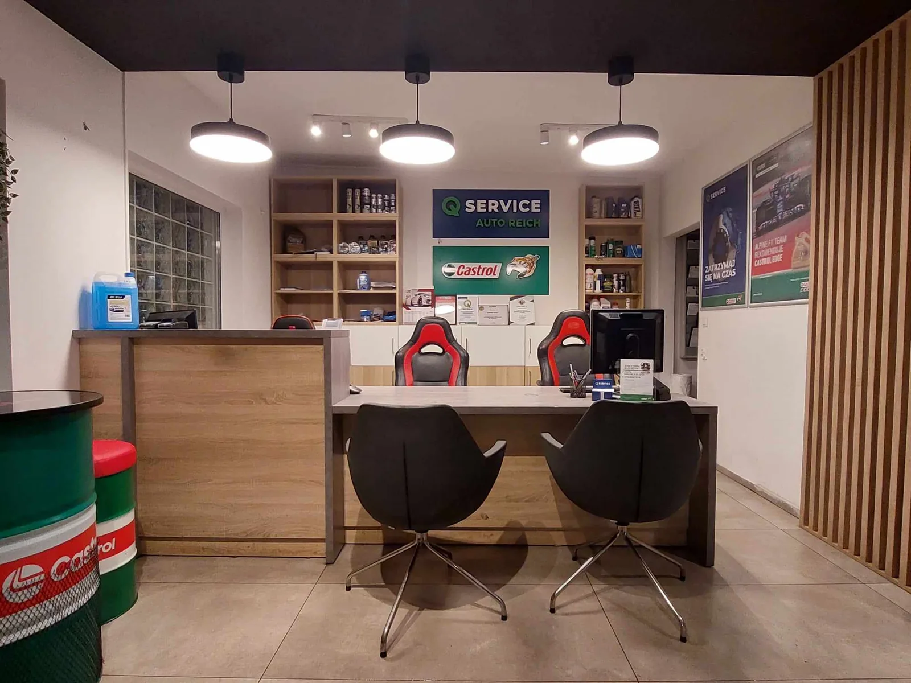

Mechanika, opony, blacharstwo z likwidacją szkód, elektronika, geometria i klimatyzacja. Wszystko w jednym miejscu przy ul. Barniewickiej.

Każda usługa ma swoją podstronę z opisem, cennikiem i odpowiedziami na pytania, które najczęściej słyszymy przy ladzie.
Zawieszenie, hamulce, rozrząd, sprzęgło i wymiana oleju, także dynamiczna w skrzyniach automatycznych.
Mechanika → 02Wymiana i wyważanie, opony niskoprofilowe i runflat, sprzedaż opon i przechowalnia.
Opony → 03Naprawy powypadkowe i lakiernictwo. Likwidacja szkód z OC i AC, sprawę z ubezpieczycielem prowadzimy za Ciebie.
Likwidacja szkód → 04Diagnostyka komputerowa, kodowanie sterowników, ABS, ASR i ESP, kamery cofania i tempomaty.
Elektronika → 05Prosto ustawiona kierownica i równo zużywające się opony. Pomiar i regulacja zbieżności kół.
Geometria → 06Napełnianie, odgrzybianie i naprawa sprężarek. Chłodno latem, suche szyby zimą.
Klimatyzacja →Jasna hala, dziesięć podnośników i auta naszych klientów. Bez zdjęć z katalogu, wszystko z Barniewickiej.





Kalendarz zapisów działa przez całą dobę. Wybierasz dzień i godzinę, przyjeżdżasz, a opony czekają już przygotowane.

Naprawiamy auta po kolizjach z OC sprawcy i z Twojego AC. Formalności z ubezpieczycielem bierzemy na siebie.

Od 46 lat naprawiamy samochody mieszkańców Gdańska. Dziś to 10 stanowisk, 20 mechaników i biuro obsługi, w którym na spokojnie omówisz naprawę.
Dzwonisz, piszesz albo zapisujesz się online.
Mówimy wprost, co trzeba zrobić teraz, a co może poczekać.
Zakres i koszt znasz, zanim mechanik weźmie klucz do ręki.